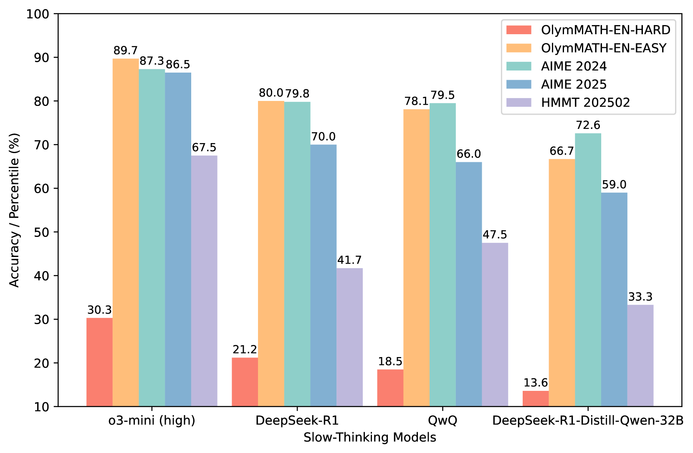

KI aus der Philosophischen Perspektive
Grundlage
KI, also Künstliche Intelligenz, beinhaltet offensichtlich den Begriff der Intelligenz. Allein dieser Begriff ist nicht einfach zu fassen: Was bedeutet Intelligenz? Fangen wir klassisch enzyklopädisch an: Intelligenz \(\rightarrow\) inter legere (lat.)
also “zwischen” “lesen/wählen”, kann also als die Fähigkeit betrachtet werden, zwischen verschiedenen Optionen zu wählen. Intelligenz ist meistens als Problemlösekompetenz beschrieben.
Aber zurück zum Thema: Es geht darum, inwiefern eine Maschine intelligent sein kann. Hier gibt es viele Debatten – ich hatte schon mindestens drei Seminare zu Thematiken in diese Richtung: * Machine Consciousness (Kurzgesagt die Frage, nach dem Bewusstsein von Menschen und Maschinen) * Determinismus vs. freier Wille (Viele sagen, ein Computer ist nicht “Intelligent”, da er niemals frei entscheiden kann) * strong vs. weak AI (auch wenn man einen Computer als “intelligent” betrachten mag, so doch niemals als menschlich intelligent)
Ein geniales Beispiel der Bewusstseinsfrage spielt sich in “Star Trek: The Next Generation” Staffel 2 Episode 9 ab. (Snodgrass 1989)
Hintergrundwissen
Dazu vielleicht noch ein wenig Hintergrundwissen (falls TNG nicht bekannt): Die Serie spielt im 24. Jahrhundert. Data ist ein Androide, und der Herr in Blau im Clip hat zum Ziel, Data auseinanderzubauen, um weitere wie ihn zu erschaffen. Dies will Data nicht. Es geht in diesem “Gerichtsprozess” darum, ob Data einen eigenen Willen äußern kann oder ob er sich dem Auseinanderbauen unterziehen muss, da er nichts anderes als ein Besitz der Sternenflotte ist.
Im Grunde könnte man hier auch Filme wie Terminator o.ä. verlinken. Die Idee der “Superintelligenz” entspringt der Vorstellung, dass eine KI, sobald sie ein Bewusstsein erlangt, von nichts mehr aufgehalten werden kann.
Die Unterscheidung zwischen starker und schwacher KI (Strong vs. Weak AI) ist zentral in der KI-Philosophie und geht ebenfalls auf John Searle zurück.
Beispiel für schwache KI
Beispiele hierfür sind KIs, die im Schach, Go oder Starcraft Weltmeister besiegt haben, aber auch Sprachassistenten wie Siri oder eben große Sprachmodelle wie ChatGPT. Sie sind extrem leistungsfähig in ihrem definierten Bereich (z.B. Sprache), aber sie “verstehen” nicht im menschlichen Sinne.Beispiel für starke KI
Man könnte jetzt sagen, aber ChatGPT und Co. sind das doch. NEIN, sind sie nicht. LLMs sind extrem fortgeschrittene schwache KIs. Sie können zwar eine beeindruckende Vielfalt an Aufgaben bewältigen, basieren aber auf Mustererkennung in Daten und besitzen kein Bewusstsein oder echte Intentionalität.
Eine echte starke KI, die sich ihrer selbst bewusst ist, existiert bisher nur in der Science-Fiction (wie z.B. Data aus Star Trek). Die Entwicklung einer solchen KI würde das Konzept der Superintelligenz aufwerfen – eine Intelligenz, die die menschliche in allen Aspekten weit übertrifft.Das Chinese-Room-Experiment
Das Gedankenexperiment des “Chinesischen Zimmers” wurde 1980 vom Philosophen John Searle vorgestellt (Searle 1980). Es ist das zentrale Argument gegen die Möglichkeit von starker KI und fragt, ob eine Maschine wirklich “verstehen” kann oder nur so tut, als ob.
Stell dir Folgendes vor:
- Eine Person, die kein Wort Chinesisch spricht, sitzt allein in einem geschlossenen Raum.
- Durch einen Schlitz werden ihr Zettel mit chinesischen Schriftzeichen (Fragen) gereicht.
- Im Raum befindet sich ein riesiges Regelbuch auf Deutsch. In diesem Buch steht genau, welche chinesischen Schriftzeichen (Antworten) sie als Reaktion auf die hereingereichten Zeichen (Fragen) nach draußen geben soll.
- Die Person folgt den Anweisungen, sucht die passenden Symbole und gibt sie als Antwort zurück.
Für einen Beobachter von außen, der Chinesisch spricht, sieht es so aus, als würde die Person im Raum die Fragen perfekt verstehen und beantworten.
Searles Schlussfolgerung: Die Person im Raum hat absolut kein Verständnis für Chinesisch. Sie manipuliert lediglich Symbole basierend auf einem Regelwerk. Searle argumentiert, dass Computer genauso arbeiten. Selbst wenn eine KI perfekte Antworten gibt, bedeutet das nicht, dass sie ein echtes Bewusstsein oder Verständnis hat. Sie simuliert nur Intelligenz.
Turing-Test
Der Turing-Test, vorgeschlagen von Alan Turing im Jahr 1950, ist eines der ältesten und berühmtesten Kriterien, um maschinelle Intelligenz zu bewerten (Turing 1950). Die Idee ist ein “Imitationsspiel”:
- Ein menschlicher Fragesteller (C) kommuniziert über Textnachrichten mit zwei ihm unbekannten Gesprächspartnern.
- Einer der Gesprächspartner ist ein Mensch (B), der andere eine Maschine (A).
- Der Fragesteller muss herausfinden, wer von beiden die Maschine ist.
Wann besteht die Maschine den Test? Wenn der Fragesteller nach einer angemessenen Zeit nicht zuverlässig sagen kann, wer der Mensch und wer die Maschine ist, hat die Maschine den Turing-Test bestanden. Sie gilt dann als intelligent, weil ihr Verhalten von menschlichem Verhalten nicht zu unterscheiden ist.
Moderne Benchmark Tests
Der klassische Turing-Test gilt heute in vielen Fällen als überholt, da moderne LLMs ihn oft problemlos bestehen können. Die Fähigkeit, eine menschliche Konversation zu imitieren, ist nicht mehr der alleinige Maßstab für fortgeschrittene KI.
Auch wenn man sich in der wissenschaftlichen Welt sehr einig ist, dass LLMs den Turing-Test bestehen können, heißt das nicht, dass irgendein System ihn offiziell und anerkannt bestanden hat! Das würde nämlich ein großes neues Problem schaffen, weshalb Firmen wie Google Philosophen anstellen, um genau das zu verhindern. Sollte eine Maschine den Turing-Test bestehen, wäre sie laut dieser Theorie intelligent. Das würde aber auch bedeuten, eine Maschine für Aufgaben wie Hausaufgaben zu nutzen, wäre praktisch Sklaverei. Das klingt absurd, aber was trennt das eine vom Anderen? Was macht Kinderarbeit zu Kinderarbeit? Warum ist es schlimm, wenn Menschen ohne Bezahlung arbeiten? Warum sollte es gut sein, einem intelligenten System den freien Willen zu nehmen?
Zurück zum Thema, heutzutage werden daher andere Arten von Zielen versucht zu erreichen:
IMO (Internationale Mathematik-Olympiade): Lange Zeit galt das Lösen von Problemen auf dem Niveau der IMO als eine große Hürde für KIs. Diese Aufgaben erfordern nicht nur Rechenleistung, sondern auch Kreativität und tiefes logisches Verständnis. Inzwischen gibt es KI-Systeme, die auch hier erstaunliche Leistungen erzielen und Goldmedaillen-Niveau erreichen.
MMLU (Massive Multitask Language Understanding): Dies ist einer der aktuell gängigsten Benchmarks. Anstatt nur Konversation zu testen, prüft MMLU das Wissen und die Problemlösefähigkeiten einer KI in 57 verschiedenen Fachgebieten – darunter Mathematik, US-Geschichte, Jura, Informatik und mehr. Eine hohe Punktzahl im MMLU-Benchmark zeigt, dass ein Modell über ein breites und tiefes “Wissen” verfügt, das weit über das Führen eines einfachen Gesprächs hinausgeht.

Hierbei ist wichtig zu beachten, die Modelle die ein wenig aktueller sind, als die unten aufgelisteten haben alle beim IMO Test inzwischen auch 100% erreicht.
Zusammenfassung
Aus philosophischer Perspektive wird KI im Allgemeinen nicht als “intelligent” oder “bei Bewusstsein” bezeichnet. Die meisten folgen hier der technischen Sicht und gehen davon aus, dass ein Programm, egal wie komplex es ist, kein Bewusstsein als solches entwickeln kann.
Es ist jedoch auch strittig, was überhaupt ein Bewusstsein ausmacht (siehe den Star-Trek-Clip). Vor 50-100 Jahren ging man offiziell davon aus, dass Tiere keinen Schmerz fühlen können und deswegen bei Operationen nicht betäubt werden müssen – sie hätten ja kein Bewusstsein. Dass sie mindestens irgendeine Form von Verstand haben, ist inzwischen klar. Aber ab wann ein Verstand oder Bewusstsein schützenswert ist, ist weiterhin sehr umstritten (siehe die Behandlung von Affen). Daher wird es wohl selbst dann, falls es unstrittig bewusste KI geben sollte, nicht dazu kommen, dass deren Nutzung verboten wird. Und hoffentlich auch nicht dazu, dass sie uns als Superintelligenz direkt ausrottet :P